Physiology Diversified.
Inclusive resources for modern physiology education.
Inclusive resources for modern physiology education.
The phases of gastric motility—cephalic, gastric, and intestinal—are triggered by the sight, smell, or taste of food, starting with salivation and preparing the stomach for digestion.
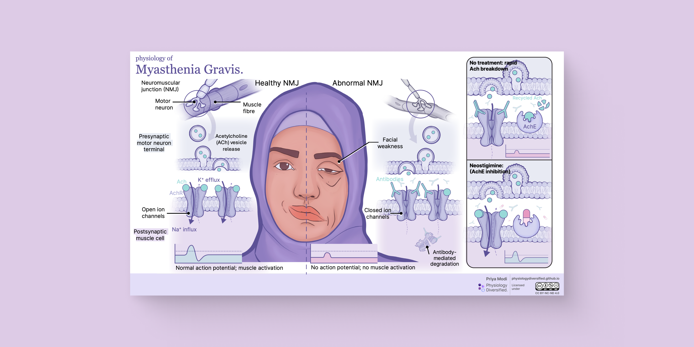
Depicting muscle weakness and facial drooping, this image shows how myasthenia gravis disrupts neurotransmission at the neuromuscular junction, impairing muscle contraction due to blocked acetylcholine receptors.
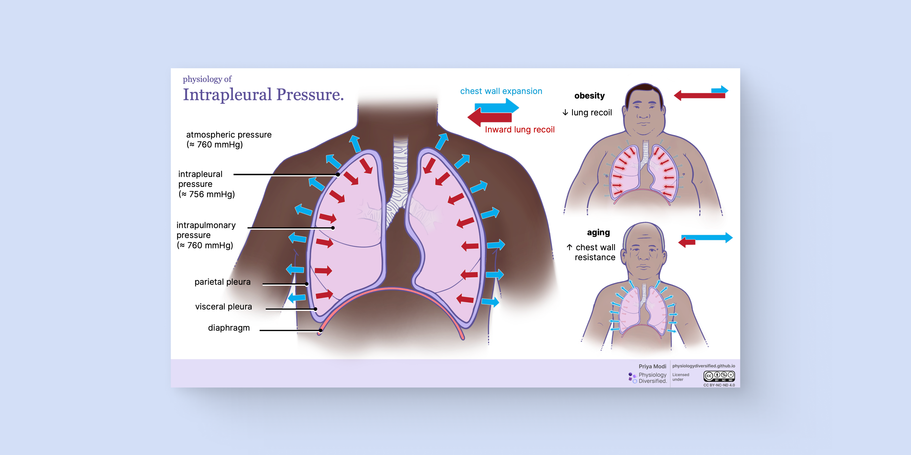
This image highlights how negative intrapleural pressure helps lungs expand by contrasting healthy, elderly, and obese lungs, illustrating the impact of body composition on respiratory function.
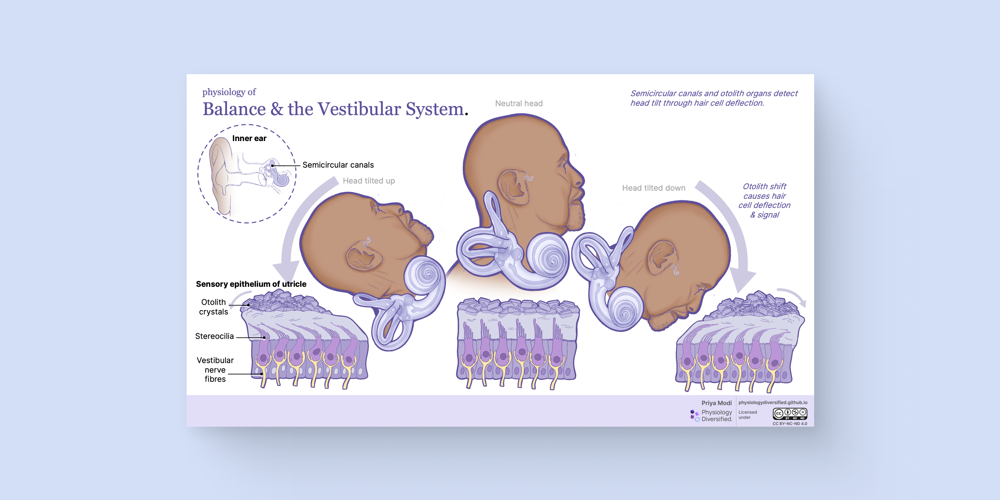
This image demonstrates how the vestibular system detects head movements using otoliths and otoconia, showing the role of the inner ear in maintaining balance and spatial orientation.
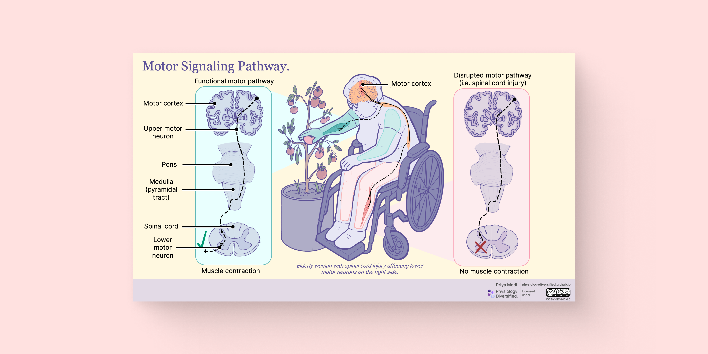
This image illustrates the corticospinal motor pathway, showing how voluntary movement signals travel from the brain to muscles. It also depict how spinal injuries can block these pathways, leading to motor function impairments.
This diagram illustrates how muscle tension varies with sarcomere length, highlighting the optimal range for cross-bridge formation and force generation. It includes both anatomical and functional perspectives relevant to musculoskeletal physiology.
This diagram shows the distribution, structure, and function of glabrous skin mechanoreceptors—Meissner corpuscles, Merkel discs, Ruffini endings, and Pacinian corpuscles. It compares their depth, adaptation rates, receptive fields, and sensory roles in touch perception, from fine texture discrimination to vibration detection.
This diagram shows the physiological cascade leading to menopause, from disrupted hypothalamic-pituitary signaling to ovarian follicle depletion. It highlights declining levels of estradiol, AMH, and inhibin B, and connects these hormonal changes to systemic effects on the brain, uterus, and bone.
This interactive graph visualizes relative hormone levels across reproductive aging, using the STRAW+10 staging system. Estradiol, progesterone, AMH, inhibin B, LH, and FSH are tracked from peak reproductive years through postmenopause, with hover-based explanations supporting classroom exploration and student-led learning.
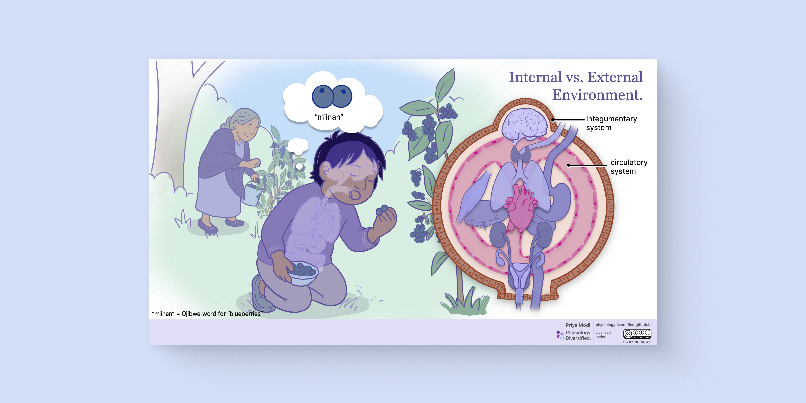
This diagram illustrates how physiological systems maintain boundaries between the internal and external environments, while incorporating Indigenous ways of knowing that emphasize relationality and interconnectedness.
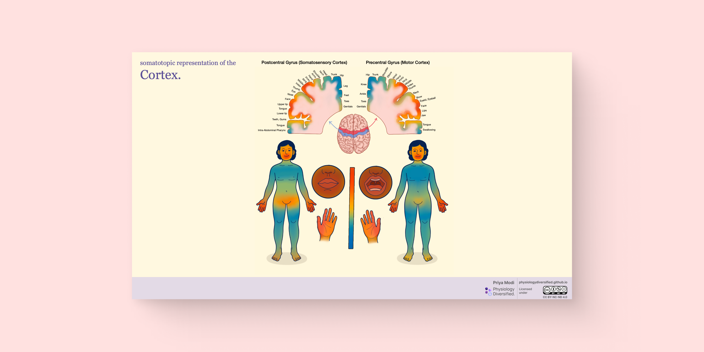
This diagram compares the somatotopic organization of the motor and sensory cortices using inclusive human figures. Colour gradients indicate cortical representation, offering an updated and EDID-informed alternative to traditional homunculus depictions.
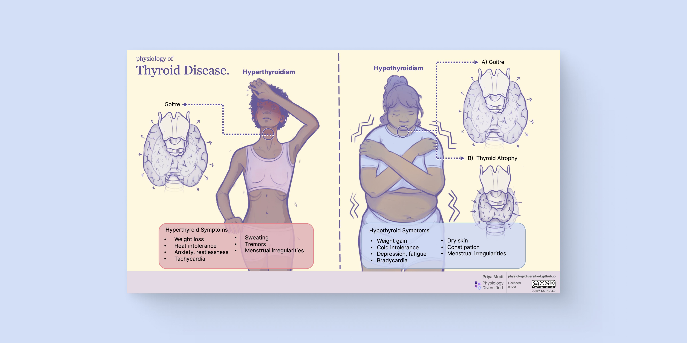
This diagram compares the physiological effects and clinical symptoms of hyperthyroidism and hypothyroidism. It highlights characteristic features of each condition while integrating diverse body types and skin tones for inclusive teaching.
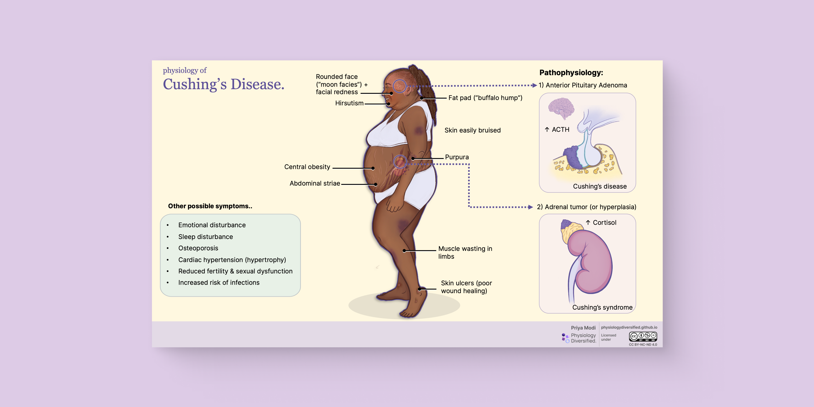
This diagram highlights the physiological and anatomical features of Cushing’s disease and syndrome, including key symptoms such as central obesity, abdominal striae, muscle wasting, and skin fragility. It visually compares pituitary-driven and adrenal-driven etiologies, while representing diverse patient presentation.
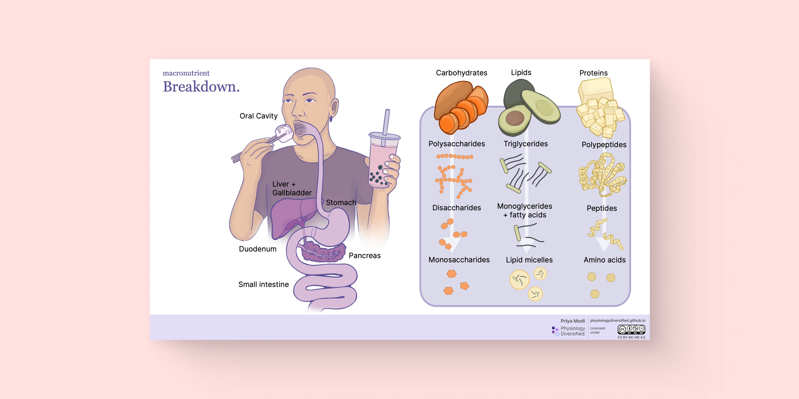
This diagram explores how carbohydrates, lipids, and proteins are enzymatically broken down and absorbed across the digestive tract. It incorporates diverse food choices to reflect cultural inclusivity while linking anatomical regions with nutrient-specific breakdown pathways.

This image illustrates how bilirubin accumulates in the skin during jaundice, highlighting its deposition across epidermal layers and the threshold for visible discolouration. By featuring a dark-skinned individual, the diagram addresses diagnostic challenges and promotes inclusive clinical awareness.
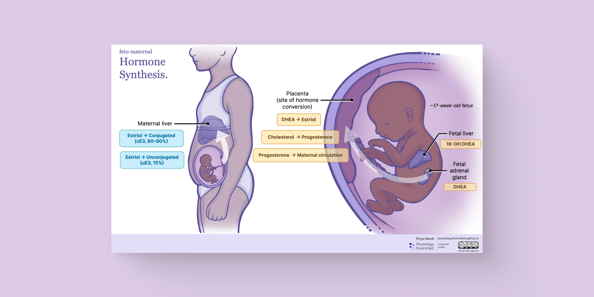
This diagram illustrates how estradiol is synthesized during pregnancy through coordinated hormone production between the fetal adrenal glands, placenta, and maternal liver. It features a pregnant figure with inclusive anatomy and visualizes key physiological changes to support deeper understanding of fetoplacental hormone biosynthesis.
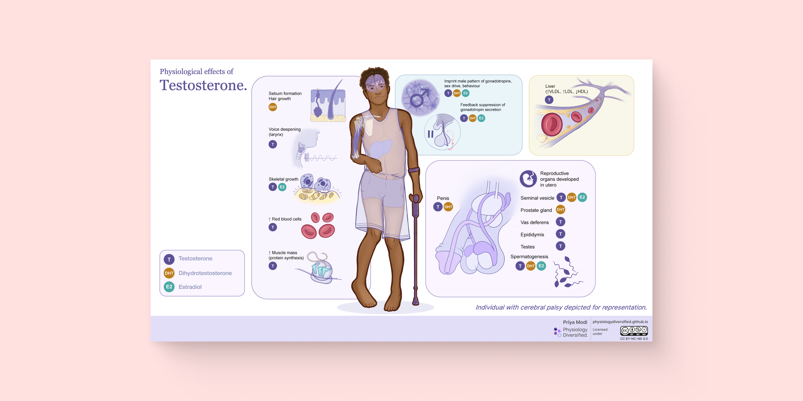
This diagram illustrates the physiological effects of testosterone across the body—on muscle mass, bone growth, red blood cells, mood, metabolism, and reproduction. It features a modular layout and an inclusive central figure with cerebral palsy, broadening representation in androgen-related physiology.
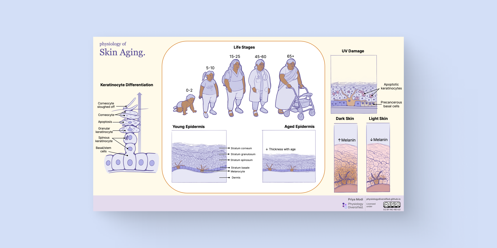
This diagram illustrates how the structure and function of the epidermis change across the human lifespan. It highlights keratinocyte differentiation, age-related thinning of the epidermis, melanin distribution in different skin tones, and the effects of UV damage.
This repository showcases inclusive and diverse educational visuals in physiology, aiming to support modern and equitable teaching strategies. All visuals are created by biomedical communicators with academic rigor and creative clarity.
BMSc, MScBMC

Design & Development
Project lead, responsible for ideation, illustration, development, and coordination of all stages of production.
See website ›BSc, PhD

Content Supervisor
Supports this project through grant funding and academic supervision from the Physiology & Pharmacology Department.
See website ›B.Eng, MScBMC

BMC Design Supervisor
Provides expert consultation on visual design and UX/UI from a biomedical communications perspective.
See website ›BA, MScBMC, PhD, FAMI

2nd Voting Committee Member
Supports project evaluation, guidance on academic standards, and supervises MScBMC thesis development.
See website ›All materials are licensed under the Creative Commons BY-NC-ND 4.0 License . Educators are encouraged to use and share responsibly with attribution.
This project is a collaboration between Western University and the University of Toronto. This work is generously funded through Western University’s BrainsCAN Equity, Diversity, and Inclusion (EDI) Funding initiative.